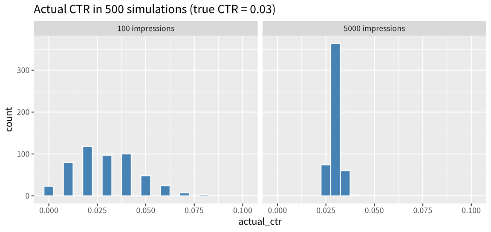
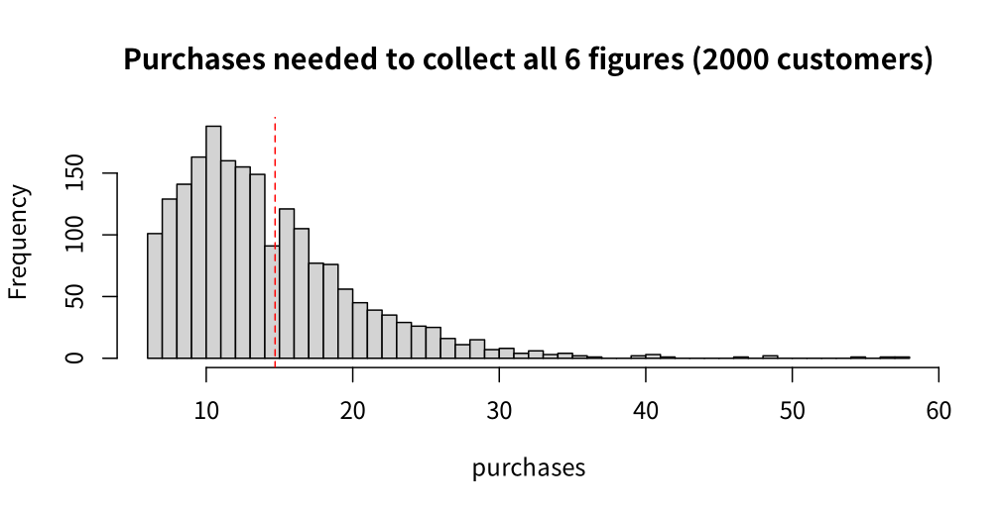

作業 2
廣告點擊與集點公仔模擬
作業 2 是兩個「用函數 + 迴圈做模擬」的題目：第一題模擬廣告點擊，觀察曝光次數越多、估計出來的點擊率越穩定；第二題模擬集點公仔，估計集滿需要買幾次、要準備多少預算。全部只用課堂教過的方法：
- 自訂函數、回傳 list、用
stop()檢查輸入（第 3 章 3.1～3.3） if、for、while迴圈（第 3 章 3.5、3.6）sample()抽樣、set.seed()（第 4 章 4.2）replicate()重複模擬（第 3 章 3.7）- 畫圖：
par(mfrow = c(1, 2))+hist()（第 4 章 4.4、第 5 章 5.2）
每一題的結構：題目 → 程式與輸出 → 列點說明在做什麼 → 「可直接貼到作業」的段落文字（按「複製這段」就能貼進 Word）。程式碼和文字中的函數名稱都有虛線底線，點下去會跳到課堂講解那個函數的地方。
library(tidyverse)
set.seed(2026) # 題目規定：整份作業開始模擬前只設定一次
set.seed(2026) 只在這裡執行一次。如果放進函數裡，或每次重複模擬前都重設，每次抽到的亂數會一模一樣，500 次「重複」其實只是同一個結果抄了 500 遍。
1.1廣告點擊模擬函數
對應課程內容（7 處）
- 第 3 章 3.1・函數的三個部分（function）
- 第 3 章 3.5・if … else（if）
- 第 3 章 3.3・message()、warning()、stop()（stop）
- 第 4 章 4.2・sample()：從一組值中抽樣（sample）
- 第 1 章 1.2・常用的摘要函數（sum）
- 第 3 章 3.1・return() 可以省略（return）
- 第 3 章 3.2・回傳多個結果：用 list 打包（list）
設計一個名為 ad_click_simulation() 的函數，模擬一則網路廣告被曝光多次，每次曝光以固定點擊率（CTR）決定是否被點擊，並計算實際點擊次數與實際點擊率。輸入參數：num_impressions（曝光總次數）、ctr（每次曝光被點擊的機率）。輸出一個列表，包含 total_clicks（點擊總次數）與 actual_ctr（點擊次數 / 曝光次數）。若 ctr 大於 1 或小於 0，函數應以 stop() 回傳錯誤訊息。
ad_click_simulation <- function(num_impressions, ctr) {
if (ctr > 1 || ctr < 0) stop("ctr 必須介於 0 與 1 之間")
clicks <- sample(c(1, 0), size = num_impressions, replace = TRUE,
prob = c(ctr, 1 - ctr)) # 每次曝光：1 = 點擊、0 = 沒點擊
total_clicks <- sum(clicks)
actual_ctr <- total_clicks / num_impressions
return(list(total_clicks = total_clicks, actual_ctr = actual_ctr))
}
先測試正常的輸入，以及不合理的 ctr：
test1 <- ad_click_simulation(1000, 0.03)
test1
## $total_clicks
## [1] 27
##
## $actual_ctr
## [1] 0.027ad_click_simulation(1000, 1.5)
## Error in ad_click_simulation(1000, 1.5): ctr 必須介於 0 與 1 之間ad_click_simulation(1000, -0.1)
## Error in ad_click_simulation(1000, -0.1): ctr 必須介於 0 與 1 之間說明：
- 檢查輸入：
if (ctr > 1 || ctr < 0) stop(...)。ctr 是機率，只能在 0～1 之間；不合理時用stop()立刻結束函數並顯示錯誤訊息，後面的模擬不會執行。這裡的條件只有一個值，所以用雙符號||（第 3 章 3.4）。 - 模擬每一次曝光：
sample(c(1, 0), size = num_impressions, replace = TRUE, prob = c(ctr, 1 - ctr))從 1（點擊）和 0（沒點擊）中抽num_impressions次。replace = TRUE表示放回抽樣，每次曝光都獨立；prob設定抽到 1 的機率是 ctr、抽到 0 的機率是 1 − ctr。 - 計算結果：1 和 0 加總就是點擊次數；除以曝光次數就是實際點擊率。
- 回傳 list：兩個結果用
list()打包並命名，呼叫端可以用$actual_ctr取出（第 3 章 3.2）。 - 測試結果：1000 次曝光、ctr = 0.03 時，這次模擬點擊了 27 次、實際點擊率 0.027，接近 0.03（每次執行會因亂數而不同）；輸入 1.5 或 −0.1 都會出現錯誤訊息。
我撰寫 ad_click_simulation() 函數，輸入曝光次數 num_impressions 與點擊率 ctr。函數一開始先檢查 ctr 是否介於 0 與 1 之間，若 ctr 大於 1 或小於 0，便以 stop() 回傳錯誤訊息「ctr 必須介於 0 與 1 之間」並停止執行。接著用 sample() 從 1（點擊）與 0（未點擊）中放回抽樣 num_impressions 次，並以 prob = c(ctr, 1 − ctr) 設定每次曝光被點擊的機率，模擬每一次曝光是否被點擊。最後將抽到的 1 加總得到點擊總次數 total_clicks，再除以曝光次數得到實際點擊率 actual_ctr，並以 list() 回傳這兩個結果。測試時，以 1000 次曝光、ctr = 0.03 呼叫函數，共點擊 27 次，實際點擊率為 0.027，接近 0.03；若輸入 ctr = 1.5 或 −0.1，函數會出現錯誤訊息，確認檢查機制有效。
1.2不同曝光次數下的實際點擊率
對應課程內容（4 處）
- 第 1 章 1.6・建立資料框（data.frame）
- 第 3 章 3.6・for：已知要重複幾次（for）
- 第 1 章 1.2・用索引取出元素 [ ]（length）
- 第 2 章 2.1・為什麼需要管線（abs）
固定 ctr = 0.03，分別以 num_impressions = 10, 100, 1000, 10000, 100000 各呼叫函數一次，用迴圈將結果整理成一個 data frame（欄位：num_impressions、actual_ctr）。曝光次數增加時，結果是否每次都更接近 0.03？
impressions <- c(10, 100, 1000, 10000, 100000)
result_b <- data.frame(num_impressions = impressions,
actual_ctr = NA) # 先建好表格，actual_ctr 等一下填入
for (i in 1:length(impressions)) {
sim <- ad_click_simulation(impressions[i], ctr = 0.03)
result_b$actual_ctr[i] <- sim$actual_ctr
}
result_b$diff <- abs(result_b$actual_ctr - 0.03) # 和真實 ctr 的差距
result_b
## num_impressions actual_ctr diff
## 1 10 0.1000 0.0700
## 2 100 0.0200 0.0100
## 3 1000 0.0360 0.0060
## 4 10000 0.0293 0.0007
## 5 100000 0.0294 0.0006說明：
- 先建表格再填值：
data.frame()先放好 5 種曝光次數，actual_ctr欄先填 NA 佔位（第 3 章 3.6 「先建立空向量，再一格一格填」的做法）。 - for 迴圈：
i依序是 1～5，第 i 圈用第 i 個曝光次數呼叫函數，取出$actual_ctr放進表格第 i 列。 - 加一欄差距：
abs(actual_ctr - 0.03)是和真實點擊率的距離（取絕對值），方便判斷「有沒有更接近」。 -
結果：
- 10 次曝光時實際點擊率是 0.1，和 0.03 差 0.07；100,000 次時是 0.0294，只差 0.0006。整體趨勢是曝光越多越接近 0.03。
- 這一次模擬剛好每一步都更接近 0.03，但這是隨機結果，不保證每次都如此——換一個亂數種子就可能出現曝光較多、差距反而較大的情況。
- 原因是每次呼叫只模擬一次，結果帶有隨機性；「越來越接近」是指平均而言的趨勢（大數法則），不是每一次都保證。下一題用重複 500 次來看這個趨勢。
固定 ctr = 0.03，我先用 data.frame() 建立一個包含 5 種曝光次數（10、100、1000、10000、100000）的表格，actual_ctr 欄先以 NA 佔位，再用 for 迴圈依序以每一種曝光次數呼叫 ad_click_simulation() 一次，把回傳的實際點擊率填入表格對應的列，並另外計算實際點擊率與 0.03 的差距。結果顯示，曝光 10 次時實際點擊率為 0.1，與 0.03 相差 0.07；曝光 100000 次時實際點擊率為 0.0294，只相差 0.0006。整體而言，曝光次數越多，實際點擊率越接近 0.03，這次模擬中差距也恰好逐步縮小；但由於每種曝光次數只模擬一次，結果帶有隨機性，並不能保證每一次增加曝光都一定更接近 0.03，換一組亂數就可能出現例外。「曝光越多越接近真實點擊率」是平均而言的趨勢，而不是每一次都成立。
1.3重複 500 次：曝光次數與估計穩定性
對應課程內容（4 處）
- 第 3 章 3.7・replicate()：重複執行做模擬（replicate）
- 第 1 章 1.2・常用的摘要函數（mean、sd、range）
- 第 5 章 5.2・R 內建繪圖（base R）（par）
- 第 4 章 4.4・直方圖與核密度估計（hist）
固定 ctr = 0.03，分別在 num_impressions = 100 與 5000 下各重複模擬 500 次，畫出兩組 actual_ctr 的直方圖（並排、相同 x 軸範圍），並計算兩組的標準差。結合 (b) 的結果，說明曝光次數與估計穩定性的關係。行銷人員若只用 100 次曝光的結果評估廣告成效，可能有什麼風險？
ctr_100 <- replicate(500, ad_click_simulation(100, 0.03)$actual_ctr)
ctr_5000 <- replicate(500, ad_click_simulation(5000, 0.03)$actual_ctr)
mean(ctr_100); mean(ctr_5000) # 兩組的平均
## [1] 0.02946## [1] 0.02992## [1] 0.01665## [1] 0.002348## [1] 0.0 0.1## [1] 0.0226 0.0384par(mfrow = c(1, 2)) # 一張圖分成左右兩格
hist(ctr_100, breaks = seq(0, 0.1, by = 0.005), xlim = c(0, 0.1),
main = "100 impressions", xlab = "actual_ctr")
hist(ctr_5000, breaks = seq(0, 0.1, by = 0.005), xlim = c(0, 0.1),
main = "5000 impressions", xlab = "actual_ctr")

par(mfrow = c(1, 1)) # 畫完改回一張圖一格
說明：
- 重複 500 次：
replicate(500, ad_click_simulation(100, 0.03)$actual_ctr)把「模擬一次、取出實際點擊率」這件事做 500 次，得到 500 個 actual_ctr（第 3 章 3.7）。5000 次曝光也一樣。再分別用mean()、sd()、range()算平均、標準差和範圍。 - 並排、相同 x 軸：
par(mfrow = c(1, 2))把畫面切成左右兩格（第 5 章 5.2），兩張hist()都設xlim = c(0, 0.1)，x 軸範圍就會相同；breaks = seq(0, 0.1, by = 0.005)讓兩張圖的長條寬度也一樣，才好比較。100 次曝光時點擊次數只能是整數，實際點擊率只會是 0、0.01、0.02……，所以左圖的長條之間有空隙。 - 標準差：100 次曝光的標準差是 0.0167，5000 次曝光只有 0.0023，大約是前者的 0.14 倍（約 1/7.1）。曝光次數變成 50 倍，標準差大約縮小為 \(1/\sqrt{50}\approx 0.14\) 倍，和二項分配的變異數 \(np(1-p)\)（第 4 章 4.3）推得的結果一致。
- 穩定性：兩組的平均都接近 0.03，但 100 次曝光的結果從 0 到 0.1 都有，散得很開；5000 次曝光集中在 0.0226～0.0384 的窄範圍內。配合 1.2 的結果：曝光越多，估計出來的點擊率越穩定、越可信。
- 只看 100 次曝光的風險：500 次模擬中，有 20.4% 的實際點擊率 ≤ 1%（看起來像很差的廣告），16.6% ≥ 5%（看起來像很好的廣告）——但真實點擊率其實都是 3%。行銷人員可能因此把一則正常的廣告誤判為失敗而停掉，或誤以為表現很好而加碼投放預算。
我固定 ctr = 0.03，用 replicate() 分別在曝光 100 次與 5000 次的情況下各重複模擬 500 次，每次取出實際點擊率，再以 par(mfrow = c(1, 2)) 將畫面分成左右兩格，用 hist() 畫出兩組的直方圖，並設定相同的 xlim 與 breaks，讓兩張圖的 x 軸範圍與長條寬度一致。結果顯示兩組的平均都接近 0.03，但曝光 100 次的實際點擊率分布在 0 到 0.1 之間，標準差為 0.0167；曝光 5000 次則集中在 0.0226 到 0.0384 之間，標準差只有 0.0023，約為前者的 0.14 倍。結合 (b) 的結果可知，曝光次數越多，實際點擊率越接近真實的點擊率，而且每次模擬之間的差異越小，估計也越穩定。若行銷人員只用 100 次曝光的結果評估廣告成效，風險在於結果受隨機性影響很大：在本次 500 次模擬中，有 20.4% 的實際點擊率不到或等於 1%，也有 16.6% 高於或等於 5%，但真實點擊率其實都是 3%。因此可能把正常的廣告誤判為成效不佳而停止投放，或誤以為成效很好而投入過多預算，應累積足夠的曝光次數後再下判斷。
2.1集點公仔模擬函數
對應課程內容（7 處）
- 第 3 章 3.1・函數的三個部分（function）
- 第 1 章 1.2・建立向量：c()、:、seq()、rep()（rep）
- 第 3 章 3.6・while：條件成立就一直做（while）
- 第 3 章 3.4・any()、all()（all）
- 第 4 章 4.2・sample()：從一組值中抽樣（sample）
- 第 3 章 3.1・return() 可以省略（return）
- 第 3 章 3.2・回傳多個結果：用 list 打包（list）
每次消費可隨機獲得 1 款公仔，共 n_types 款，每款出現機率相同。撰寫 collect_figures() 函數，模擬一位顧客持續消費，直到集滿所有款式為止。輸入 n_types（預設 6），輸出列表包含 purchases（集滿所需的總購買次數）與 duplicates（重複拿到的個數 = purchases − n_types）。函數內須使用 while 迴圈。
collect_figures <- function(n_types = 6) {
owned <- rep(FALSE, n_types) # 記錄每一款是否已拿到，一開始全部沒有
purchases <- 0
while (!all(owned)) { # 還沒集滿就繼續買
figure <- sample(1:n_types, 1) # 隨機拿到其中一款
owned[figure] <- TRUE # 這一款標記為已擁有
purchases <- purchases + 1
}
duplicates <- purchases - n_types
return(list(purchases = purchases, duplicates = duplicates))
}
說明：
- 預設引數：
function(n_types = 6)，沒給引數時就是 6 款（第 3 章 3.2）。 - 用邏輯向量記錄：
owned <- rep(FALSE, n_types)建立 6 個 FALSE，第 k 格代表第 k 款有沒有拿到。拿到第 3 款就執行owned[3] <- TRUE；同一款重複拿到，只是把已經是 TRUE 的格子再設一次 TRUE，不會改變任何東西。 - while 的條件：
all(owned)在 6 格都是 TRUE（集滿）時才是 TRUE（第 3 章 3.4）；前面加!變成「還沒集滿」，條件成立就繼續買。 - 每一圈做的事：
sample(1:n_types, 1)從 1～6 隨機抽一款（每款機率相同）、標記已拿到、購買次數加 1。集滿後跳出迴圈。 - 重複個數：總共買了 purchases 次，其中只有 n_types 次是新款，其餘都是重複的，所以
duplicates = purchases - n_types。
我撰寫 collect_figures() 函數，引數 n_types 預設為 6。函數內先用 rep(FALSE, n_types) 建立一個長度為 n_types 的邏輯向量 owned，記錄每一款公仔是否已經拿到，並將購買次數 purchases 設為 0。接著用 while 迴圈，以 !all(owned)（還沒有集滿所有款式）作為繼續消費的條件：每一圈用 sample(1:n_types, 1) 隨機抽出一款公仔，因為每款被抽到的機率相同，符合題目設定；再把 owned 中對應的位置設為 TRUE，並將購買次數加 1。若抽到已經擁有的款式，owned 不會改變，但購買次數仍會增加。當所有款式都拿到時，all(owned) 為 TRUE，迴圈結束。最後以 purchases − n_types 計算重複拿到的個數 duplicates，並用 list() 回傳 purchases 與 duplicates。
2.2一位顧客的模擬結果
對應課程內容（5 處）
- 第 3 章 3.3・print() 與 cat()（cat）
- 第 3 章 3.7・replicate()：重複執行做模擬（replicate）
- 第 1 章 1.2・常用的摘要函數（summary、mean、sum）
- 第 4 章 4.4・直方圖與核密度估計（hist）
- 第 6 章 6.3・殘差圖發現非線性（abline）
執行 collect_figures(6) 一次，並在函數外用 cat() 印出結果，例如「共購買 15 次集滿 6 款，重複拿到 9 個。」
one_customer <- collect_figures(6)
cat("共購買", one_customer$purchases, "次集滿 6 款，重複拿到", one_customer$duplicates, "個。\n")
## 共購買 12 次集滿 6 款，重複拿到 6 個。說明：
- 把函數的回傳結果存成
one_customer，再用$purchases、$duplicates取出兩個數字。 cat()把文字和數字串成一句話印出，各段之間自動加一個空格；結尾的"\n"換行（第 3 章 3.3）。若不想要數字前後的空格，可以加sep = ""。- 這位顧客共購買 12 次才集滿，其中 6 個是重複的。
我執行 collect_figures(6) 一次，把回傳的列表存成 one_customer，再在函數外用 cat() 將 one_customer$purchases 與 one_customer$duplicates 和文字組合成一句話印出。結果為「共購買 12 次集滿 6 款，重複拿到 6 個。」也就是這位顧客買了 12 次才集滿 6 款，其中有 6 個是重複的公仔。由於每次拿到哪一款是隨機的，每次執行的結果都會不同。
2.3 2000 位顧客：平均購買次數與超過 20 次的機率
重複模擬 2000 位顧客，計算平均購買次數，並與理論值 \(n \sum_{k=1}^{n} \frac{1}{k}\) 比較。同時估計「需要購買超過 20 次」的機率。
## Min. 1st Qu. Median Mean 3rd Qu. Max.
## 6.0 10.0 13.0 14.6 17.0 58.0sim_mean <- mean(purchases_2000)
theory <- 6 * sum(1 / (1:6))
c(simulation = sim_mean, theory = theory)
## simulation theory
## 14.6 14.7mean(purchases_2000 > 20) # 需要購買超過 20 次的比例
## [1] 0.144hist(purchases_2000, breaks = 40,
main = "Purchases needed to collect all 6 figures (2000 customers)",
xlab = "purchases")
abline(v = theory, col = "red", lty = 2)

說明：
- 模擬 2000 位顧客：
replicate(2000, collect_figures(6)$purchases)每次模擬一位顧客、只取出購買次數，得到 2000 個數字。 - 理論值：\(6\times\left(1+\frac12+\frac13+\frac14+\frac15+\frac16\right)=\) 14.7。R 裡
1 / (1:6)一次算出 1、1/2、…、1/6（向量化運算），sum()加總後乘以 6。- 為什麼是這個公式：已有 k − 1 款時，下一次抽到新款的機率是 \(\frac{n-k+1}{n}\)，平均要買 \(\frac{n}{n-k+1}\) 次才會拿到新款；把集齊每一款所需的次數加起來就是 \(n\left(\frac1n+\dots+\frac11\right)\)。
- 比較：模擬平均 14.6 次，理論值 14.7 次，兩者非常接近，表示模擬函數寫對了（第 3 章撲克牌例子也是用這種「模擬對照理論」的方式驗證）。
- 超過 20 次的機率：
purchases_2000 > 20得到 2000 個 TRUE/FALSE，取平均就是 TRUE 的比例，約 0.144，也就是大約每 7 位顧客就有 1 位要買超過 20 次。 - 從直方圖可以看到分布是右偏的：大部分顧客在 10～20 次之間集滿，但少數運氣差的顧客要買到 30、40 次以上。
我用 replicate() 重複執行 collect_figures(6) 2000 次，模擬 2000 位顧客，每次取出集滿所需的購買次數。2000 位顧客的平均購買次數為 14.6 次；理論值為 6 × (1 + 1/2 + 1/3 + 1/4 + 1/5 + 1/6) = 14.7 次，在 R 中以 6 * sum(1 / (1:6)) 計算。模擬結果與理論值非常接近，表示模擬函數的設計正確。接著以 mean(purchases_2000 > 20) 計算購買次數大於 20 的比例，估計「需要購買超過 20 次」的機率約為 0.144，也就是大約每 7 位顧客中就有 1 位需要買超過 20 次才能集滿。從直方圖也可以看到購買次數的分布呈右偏，多數顧客在 10 到 20 次之間集滿，但少數顧客需要購買 30 次以上。
2.4要有 90% 機率集滿的預算
對應課程內容（3 處）
- 第 1 章 1.8・快速摘要一份真實資料（quantile）
- 第 3 章 3.6・while：條件成立就一直做（while）
- 第 1 章 1.2・常用的摘要函數（mean）
假設每次取得一個公仔的消費金額固定為 65 元，一位顧客要有至少 90% 的機率集滿 6 款，大約需要準備多少預算？說明你的計算方式。
q90 <- quantile(purchases_2000, 0.9) # 90% 的顧客在這個次數以內集滿
q90
## 90%
## 23## [1] 23mean(purchases_2000 <= k) # 檢查：買 k 次以內集滿的比例
## [1] 0.9155mean(purchases_2000 <= k - 1) # 少買一次就不到 90%
## [1] 0.898k * 65 # 預算
## [1] 1495說明：
- 把問題換成「次數」：「有 90% 的機率集滿」等於「買 k 次以內就集滿的機率至少 0.9」。找出這個 k，預算就是 k × 65 元。
- 用分位數估計：
quantile(purchases_2000, 0.9)是 2000 位顧客購買次數的第 90 百分位數，表示大約 90% 的顧客在這個次數以內就集滿（第 1 章 1.8 的quantile()），結果是 23。 - 用 while 迴圈找整數 k：購買次數只能是整數，所以再用 while 迴圈從 k = 0 開始一次加 1，直到「買 k 次以內就集滿的比例」
mean(purchases_2000 <= k)第一次達到 0.9 為止，得到 k = 23，和分位數的結果一致。 - 驗證：模擬中買 23 次以內集滿的比例是 0.915（≥ 0.9）；只買 22 次的比例是 0.898（< 0.9），所以 23 次是剛好達到 90% 的最少次數。
- 預算：23 × 65 = 1495 元。
- 這是用模擬估計的，換一組亂數，第 90 百分位數可能差 1 次左右，預算會差約 65 元；保守起見可以再多準備一點。對照平均值約 14.6 次（約 949 元）可以看出：只準備「平均」的預算（買 14 次），模擬中只有 59% 的顧客能集滿。
要有至少 90% 的機率集滿 6 款，相當於找出一個購買次數 k，使得「在 k 次以內集滿」的機率至少為 0.9，所需預算即為 k × 65 元。我利用 (c) 模擬的 2000 位顧客購買次數，以 quantile() 計算第 90 百分位數，結果為 23 次，代表約 90% 的顧客在這個次數以內就能集滿。由於購買次數必須是整數，我再用 while 迴圈從 0 次開始逐次增加，找出「在 k 次以內集滿的比例」第一次達到 0.9 的最小次數，得到 23 次。在模擬中，購買 23 次以內集滿的比例為 0.915，已達 90%；若只買 22 次，比例只有 0.898，未達 90%。因此一位顧客大約需要購買 23 次，準備 23 × 65 = 1495 元的預算，才有至少 90% 的機率集滿 6 款。相較之下，若只依平均購買次數約 14.6 次準備約 949 元，在模擬中只有約 59% 的顧客能在 14 次內集滿。由於這是模擬得到的估計值，換一組亂數結果可能相差約一次購買（65 元），實際準備時可以保留一些餘裕。